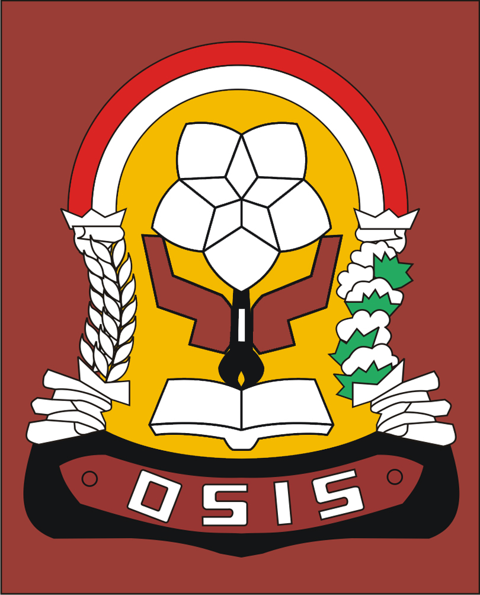

Biodata
Nama |
Nurhikmah |
Jenis Kelamin |
Perempuan |
Agama |
Islam |
TTL |
Maroanging, 15 oktober 2000 |
Alamat |
Kec. Pammana, Kab. Wajo, Provinsi Sulawesi selatan |
Hobi |
Menyanyi, main bulu tangkis |
No. Telepon |
085255454710 |
Riwayat Pendidikan
-

Sekolah Dasar
saya memulai pendidikan sekolah dasar setelah menempuh pendidikan dari TK. saya mulai pendidikan sekolah dasar pada tahun 2008 dan lulus pada tahun 2013. selama pendidikan sekolah dasar saya pernah mengikuti lomba olahraga yaitu tennis meja.
-

Sekolah Menengah Pertama
setelah saya menyelesaikan pendidikan sekolah dasar, saya melanjutkan pendidikan sekolah di MTS Nurul Ulum AS’ADIYAH Maroanging, melanjutkan pendidikan pada tahun 2013 dan lulus pada tahun 2016. selama saya sekolah saya pernah mengikuti beberapa kegitan salah satu kegiatan yang saya ikuti yaitu lomba kasidah.
-

Sekolah Menengah Atas
saya melanjutkan pendidikan setelah lulus, saya melanjutkan pendidikan di SMAN 9 Wajo, selama saya sekolah saya penah mengikuti beberapa kegiatan organisasi mulai dari pramuka, PMR, Pik remaja.
Riwayat Pelatihan
Panitia dalam Kegiatan Organisasi sekolah
Sebagai sekretaris latihan pengembangan kepemimpinan di sekolah periode 2018/2019. Untuk menanamkan dan mengembangkan jiwa kepemimpinan bagi generasi muda.
Mengikuti pelatihan Anti Narkoba
Pelatihan Narkoba yang diadakan komunitas BNN yang diadakan di Kota Makassar. Untuk mengedukasi pelajar Indonesia agar terbebas dari obat-obatan terlarang.
Deskripsi diri
Hi! Nama saya Nurhikmah biasa dipanggil Imma, lahir di Maroanging, 15 oktober 2000, saya merupakan anak pertama dari 3 bersaudara. Saya merupakan seorang yang kurang peduli pada lingkungan sekitar lebih tepatnya cuek namun saya termasuk individu yang yang peduli terhadap sesama. Saya sangat suka hal – hal yang berbau seni, misalnya menyanyi, dance, tari, dan acting. Saya juga suka memasak.